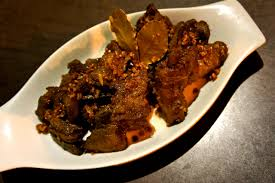

Poisson grille

Description
Nearby the seashore, the fisher as their special way to prepare the fish. It's a simple and easy way.
Ingredients
Below you will find the most important ingredients for poisson grille dish
Steps to prepare Poisson grille
Below you will find some steps in the making of poisson grille
- put some water in a bowl and add much lemon juice in it.
- clean the fish with sea water
- light dry wood for 1 hour.
- put the fish in the midle of the fire for 20 mns while turning it times to times.